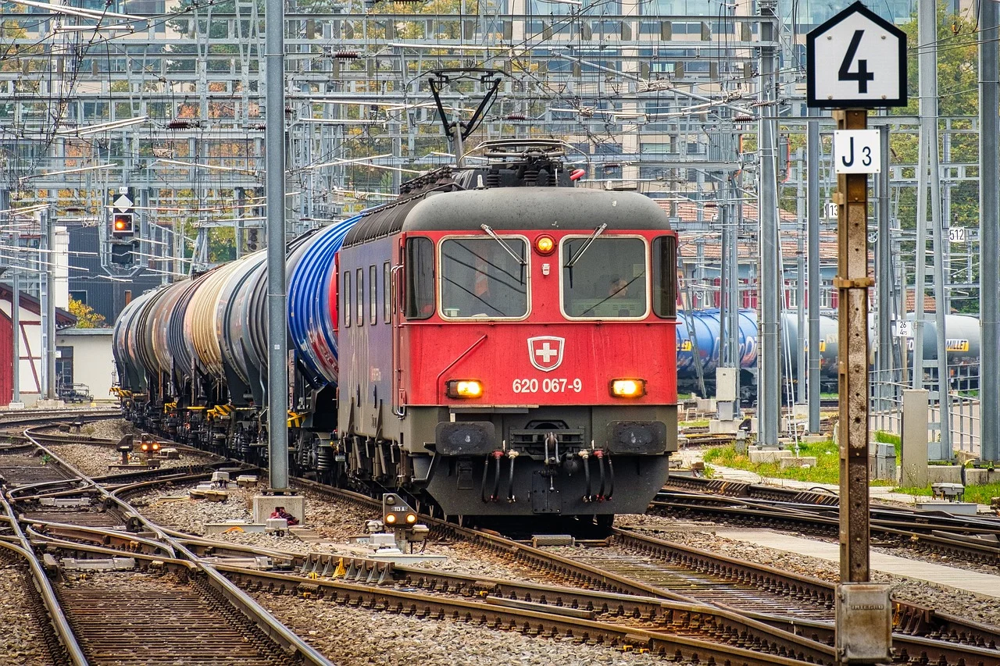
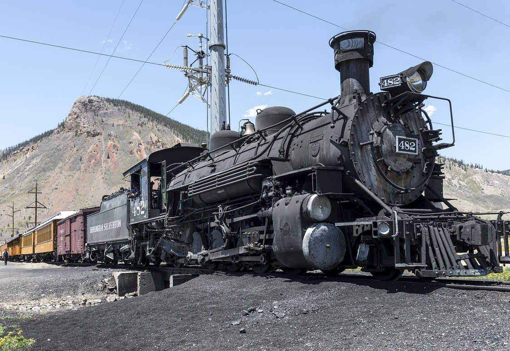
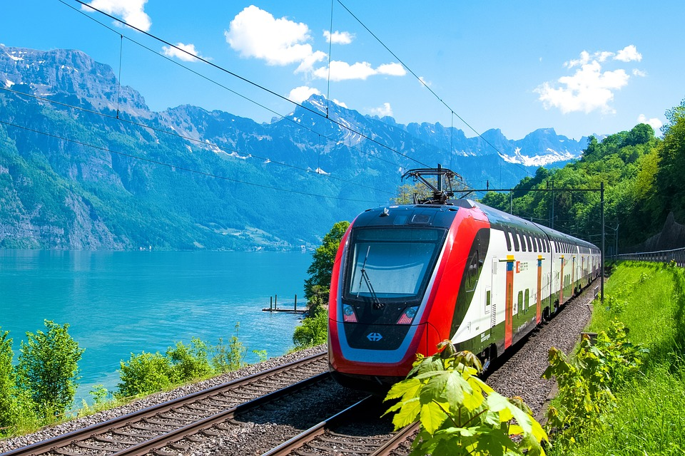
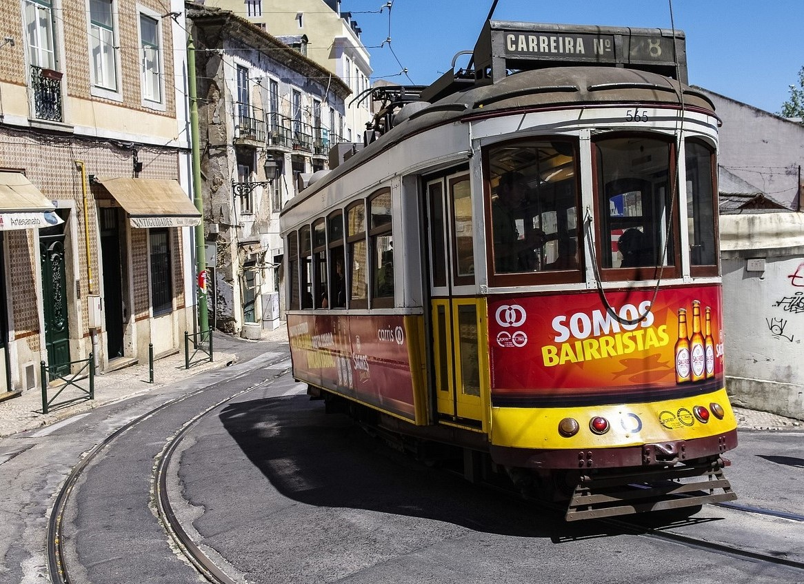
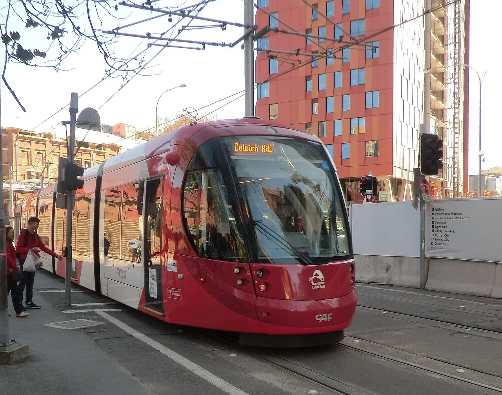
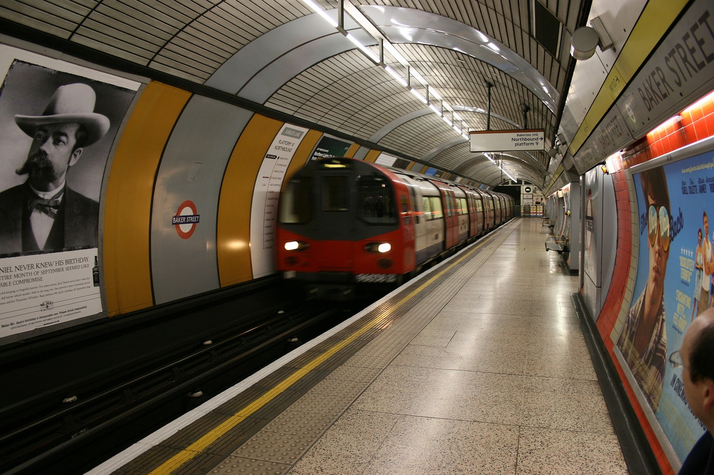
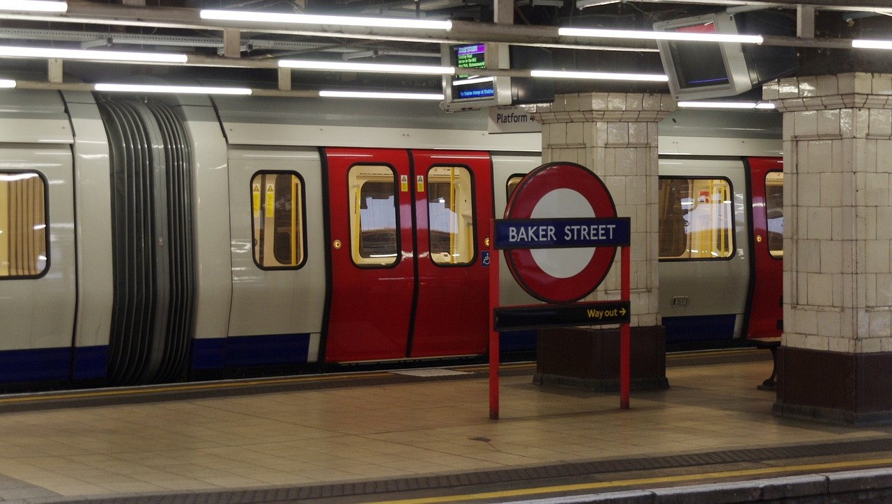

Civíl sínen közlekedő járművek
A vonatok
A vasúti közlekedésben a "vonat" kifejezés egy vagy több vasúti jármű olyan összeállítását jelenti, amely alkalmas a vasúti pályán történő közlekedésre, legyen az személy- vagy teherszállítás céljából.
Vonattípusok:
A személyszállító vonatok

A személyszállító vonatok az utasok szállítására szolgálnak a vasútállomások között. Ezek közé tartoznak a nagytávolságú vonatok, amelyek akár több országot is összeköthetnek. Ezek a vonatok gyakran rendelkeznek étkezőkocsival, és lehetőség van hozzájuk fekvőhelyes és hálókocsikat is csatlakoztatni. A nagysebességű vonatok általában nem tartalmaznak hálókocsikat, de sebességükkel versenyképes alternatívát nyújtanak a repülőgépekkel szemben.
A teherszállító vonatok
A teherszállító vonatok esetében a vasúti szállítás bizonyos körülmények között gazdaságosabb és energiatakarékosabb lehet, mint a közúti szállítás. Bár a személyszállítással szemben általában nyereséges üzletág, a nagy tömegű áruk nagy távolságra való szállításában a vasút gazdaságosabb megoldást nyújthat. A különféle teheráruk szállításához sokféle teherkocsi kifejlesztésére volt szükség a vasúti közlekedés hatékonyságának növelése érdekében.
| Régen | Most |
|---|---|
|  |  |
- JR-Maglev MLX01, 581 km/óra
- TGV V150, 574,8 km/óra
- JR-Maglev ML500, 517 kilométer/óra
- TGV Atlantique, 515,3 km/óra
- Transrapid 08, 501,5 km/óra
Top 5 leggyorsabb vonat
Érdekességek
1865-ben, az Amerikai Egyesült Államok elnökének, Abraham Lincolnnek a meggyilkolása után tiszteletből a holttestét vonattal szállították vissza szülővárosába. Az út során a vonat több mint 180 városon keresztülhaladt. Az Ausztráliában található vasúti pálya, mely a világon a leghosszabb egyenes szakasszal büszkélkedhet, 478 kilométeren keresztül fut egyenesen, kanyarok nélkül, ugyanabba az irányba.| Régi | Új |
|
|
|
A Villamosok
A villamos, vagy más néven közúti villamos vasút, egy elektromossággal működő jármű, mely az úttestbe épített, de vasúti pályaként nem jelölt sínpályán közlekedik. Ez a közlekedési eszköz elődjeivel, mint például a lóvasúttal és a gőzvontatású városi vasúttal együtt, a közúti vasutak kategóriájába tartozik, melyek a 20. század közepére váltak dominánssá, kiszorítva elődeiket.

A városokon belüli közforgalmú közlekedés fejlődése a 19. század közepére tehető. Ekkorra már olyan nagy területű és lakosságú városok léteztek, ahol szükségessé vált egy hatékony közlekedési rendszer kiépítése, és a technológia is elérhetővé vált annak megvalósításához.
Az első utcai gőzvontatású vasút New Yorkban épült 1832-ben, azonban ez nem aratott nagy sikert. Pesten az első lóvasút 1866. július 30-án indult útjára. Érdekesség, hogy az útvonal nagy része a mai napig a város egyik fő közlekedési útvonala, a Váci út mentén halad. Az első lóvasútot gróf Károlyi Sándor alapította, és a Pesti Közúti Vaspálya Társaság (PKVT) üzemeltette. Az egykori újpesti lóvasút állomás épülete ma is áll, és bár már nem lóvasútként működik, a neve még mindig az Újpest-Városkapu.
| Régen | Most |
|---|---|

|

|
1879-ben egy berlini kiállításon Werner Siemens bemutatta az első olyan villanyhajtású vasutat, mely az áramot nem akkumulátorból, hanem áramszedő segítségével egy erre a célra épített vezetékből kapta. Ez a találmány adott lendületet a közúti vasutak továbbfejlesztésének.
A "villamos" elnevezés a korábbi városi, utcai vasutak, mint például a lóvasút megkülönböztetésére szolgál, utalva arra, hogy ezek a közlekedési eszközök nem állati vagy gőzhajtással, hanem elektromos energiával, azaz "villamos" energia hajtják.
Villamos fajták
- Hagyományos felépítésű járművek
- Az első csuklós villamosok
- Jacobs-forgóvázas csuklósok
- Rövidcsuklós kocsik
- Többcsuklós villamosok
A metró
A metró a nagyvárosokban elterjedt tömegközlekedési eszköz, melynek célja a nagy kapacitású tömegszállítás biztosítása.
Nemzetközi értelemben véve a metró egy olyan vasúti rendszer, mely a városokat és azok környékét szolgálja ki, általában külön szinten haladva, a föld alatt vagy felette. Bár a magyar nyelvterületen az 1950-es évek óta a földalatti vasút szinonimájaként használjuk a kifejezést, ez erőteljes fogalomszűkítést jelent az internacionális értelemben.
A metró rendszerint a leggyorsabb közlekedési mód a nagyvárosokban, néha gyorsvasútnak is nevezik. Az angol nyelvterületen elterjedt továbbá a "subway", "tube", vagy "underground" kifejezés is.
Eredete
Az első "metró" a Londoni Metropolitan Vasút volt, melyet 1863-ban indítottak el. Európában más nagyvárosok is követték a londoni példát, és "Metropolitan"-nak vagy "metro"-nak nevezték el rendszereiket.
Előnye és hátránya
A metró előnyei közé tartozik, hogy
- gyors
- kevésbé szennyezi a környezetet
- sok embert tud elszállítani anélkül, hogy sok helyet foglalna a felszínen.
Azonban hátrányai közé sorolható, hogy
- zajos
- vészhelyzet esetén nehezen lehet elmenekülni
- a peron szélén állva a metró szívása veszélyes lehet
Biztonság és védelem
A gyorsvasút viszont jó biztonsági mutatókkal rendelkezik, mivel szigorú biztonsági előírások vonatkoznak rá, és a pályákat úgy tervezik, hogy minimalizálják a balesetek kockázatát. Bár a föld alatti rendszerekre tűz nagyobb veszélyt jelenthet, az evakuációt általában gondosan tervezik és kialakítják az ilyen esetekre való felkészülés érdekében.
Forrás: Wikipédia